Tor
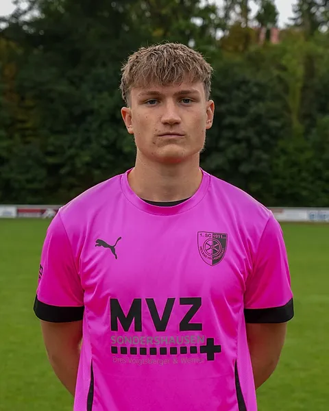
23Nico Lorenz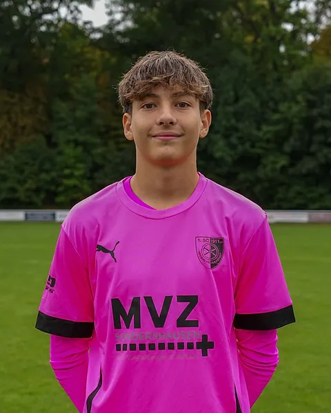
Lennox BiedermannAbwehr
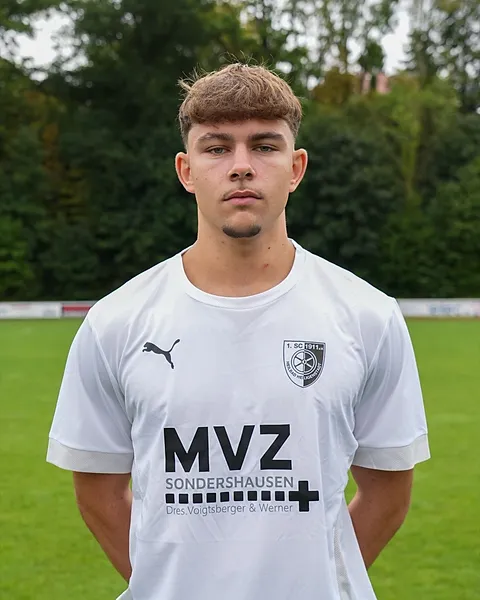
4Oskar Wenzel5Ian-Erik Remus
16Artur Kopach
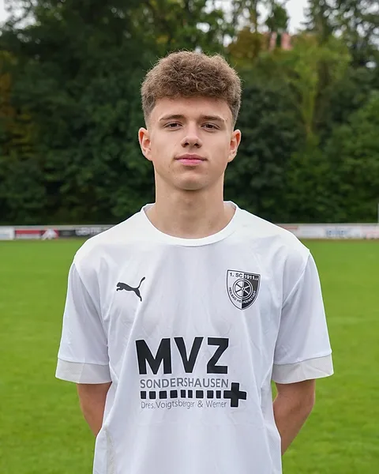
Linus Bringmann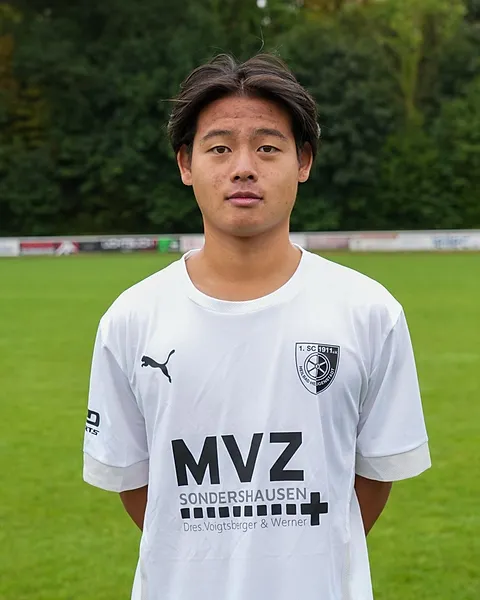
Yun-Yo ChenArtem Kopach
Josef Kränzel
Leo Pandrock
Mittelfeld
11Jannis Mähler
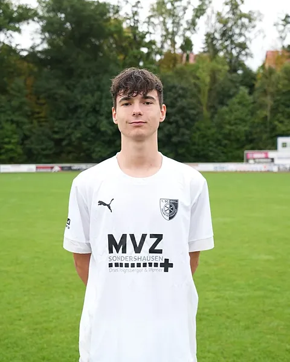
Jonathan HartwigLuca Klinge
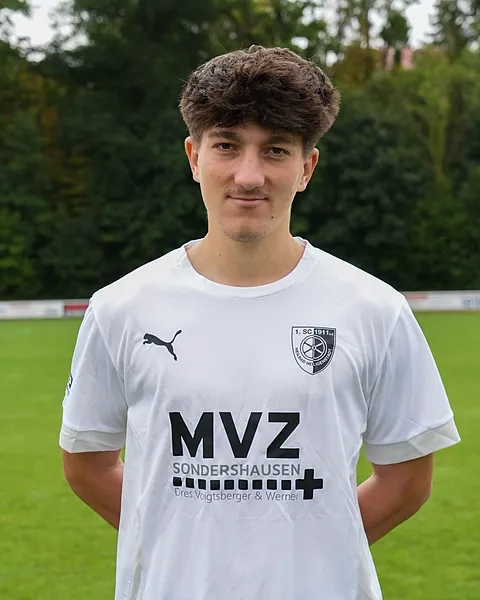
Matt MäderArdi Rexhepi
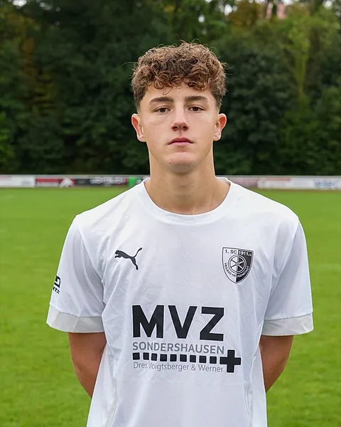
Ben Rotzoll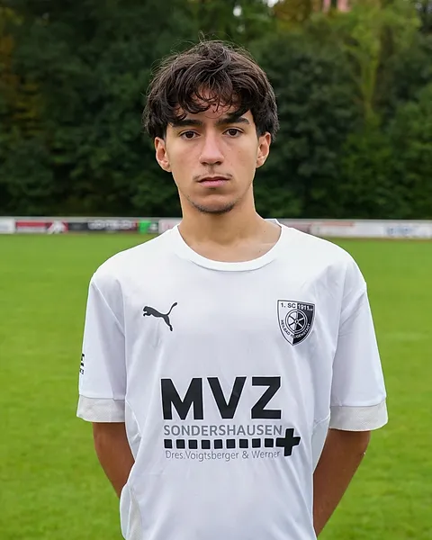
Umeyr SahinAngriff
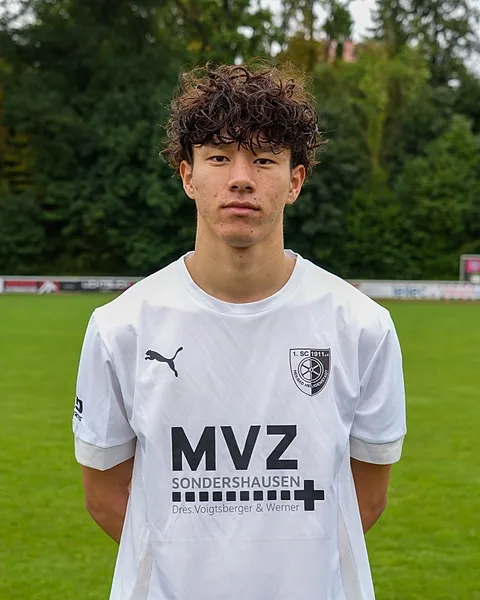
13Hossein Yarmohammadi15Jo Henkel
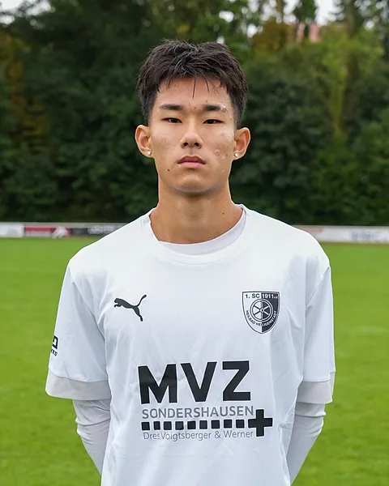
Masato ChenJannis Hentrich
Silas Osburg
Peter Voigtsberger
Trainerstab
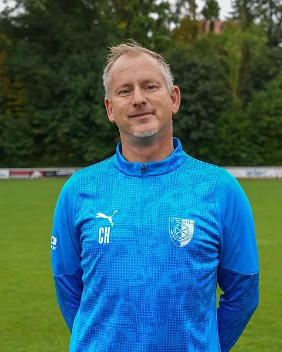
Christian HartmannTrainer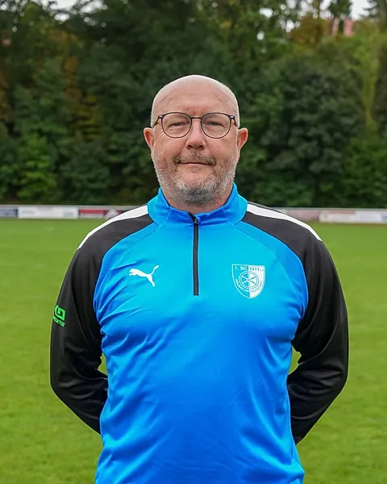
Andreas SeipelTrainer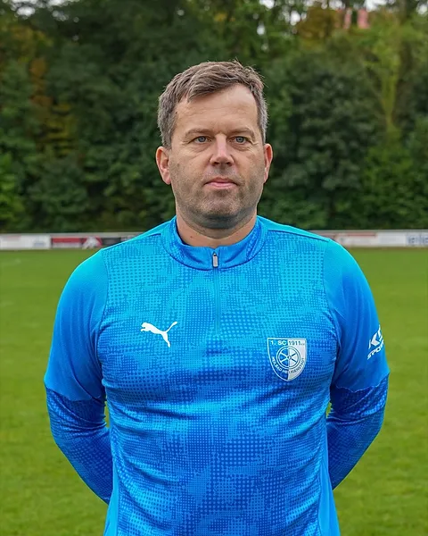
Fabian ApelBetreuer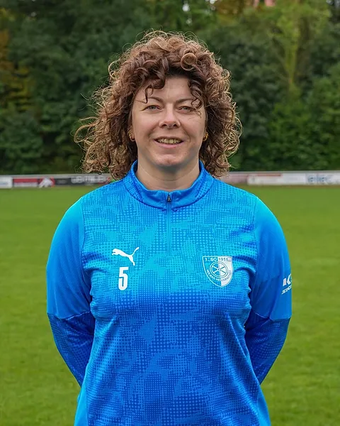
Sabine ApelBetreuer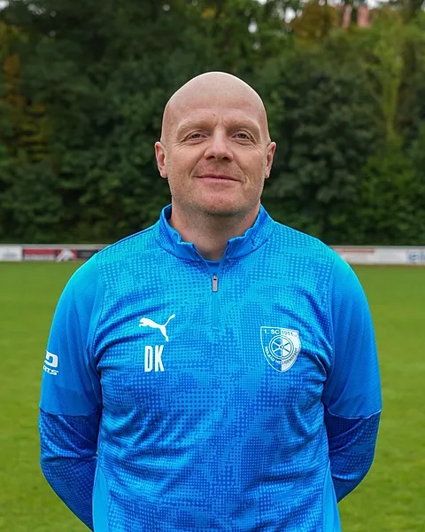
Dominic KlingeBetreuer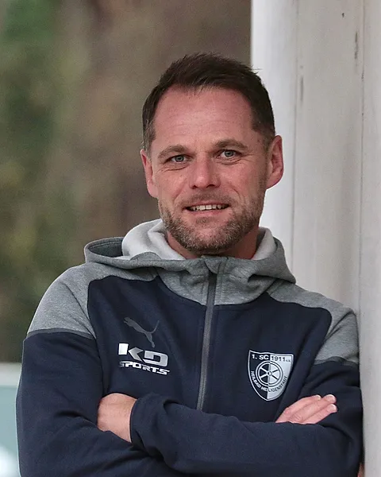
Fabian WehrTeammanagerNächste Spiele
- 18:30Do, 22.10.Landesfreundschaftsspiele1. SC 1911 Heiligenstadt:1. SC Göttingen 05 U19HeimspielZum Spiel 1. SC 1911 Heiligenstadt gegen 1. SC Göttingen 05 U19
- 10:30So, 01.11.Verbandsliga1. SC 1911 Heiligenstadt:SV 09 ArnstadtHeimspielZum Spiel 1. SC 1911 Heiligenstadt gegen SV 09 Arnstadt
- 10:30So, 08.11.Verbandsliga1. SC 1911 Heiligenstadt:JFV Eichsfeld MitteHeimspielZum Spiel 1. SC 1911 Heiligenstadt gegen JFV Eichsfeld Mitte
- 10:30Sa, 14.11.VerbandsligaFSV Waltershausen:1. SC 1911 HeiligenstadtAuswärtsZum Spiel FSV Waltershausen gegen 1. SC 1911 Heiligenstadt
- 10:30Sa, 21.11.VerbandsligaFSV Eintracht Eisenach:1. SC 1911 HeiligenstadtAuswärtsZum Spiel FSV Eintracht Eisenach gegen 1. SC 1911 Heiligenstadt
- 10:30So, 14.03.Verbandsliga1. SC 1911 Heiligenstadt:1. FC EichsfeldHeimspielZum Spiel 1. SC 1911 Heiligenstadt gegen 1. FC Eichsfeld
- 10:30So, 11.04.VerbandsligaBSV Eintracht Sondershausen:1. SC 1911 HeiligenstadtAuswärtsZum Spiel BSV Eintracht Sondershausen gegen 1. SC 1911 Heiligenstadt
- 10:30So, 18.04.Verbandsliga1. SC 1911 Heiligenstadt:SG FSV SömmerdaHeimspielZum Spiel 1. SC 1911 Heiligenstadt gegen SG FSV Sömmerda